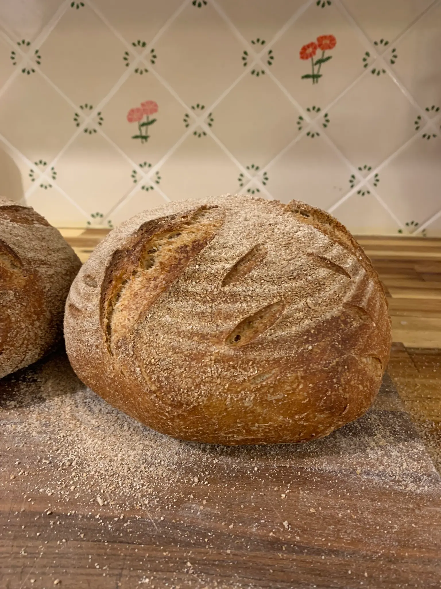
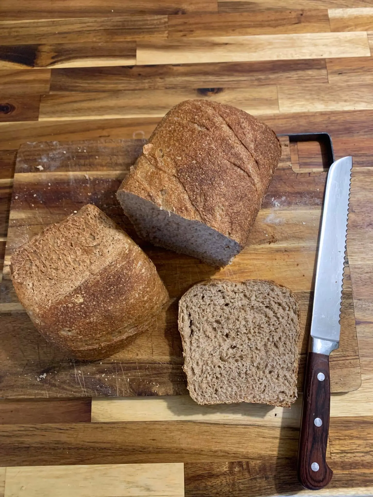
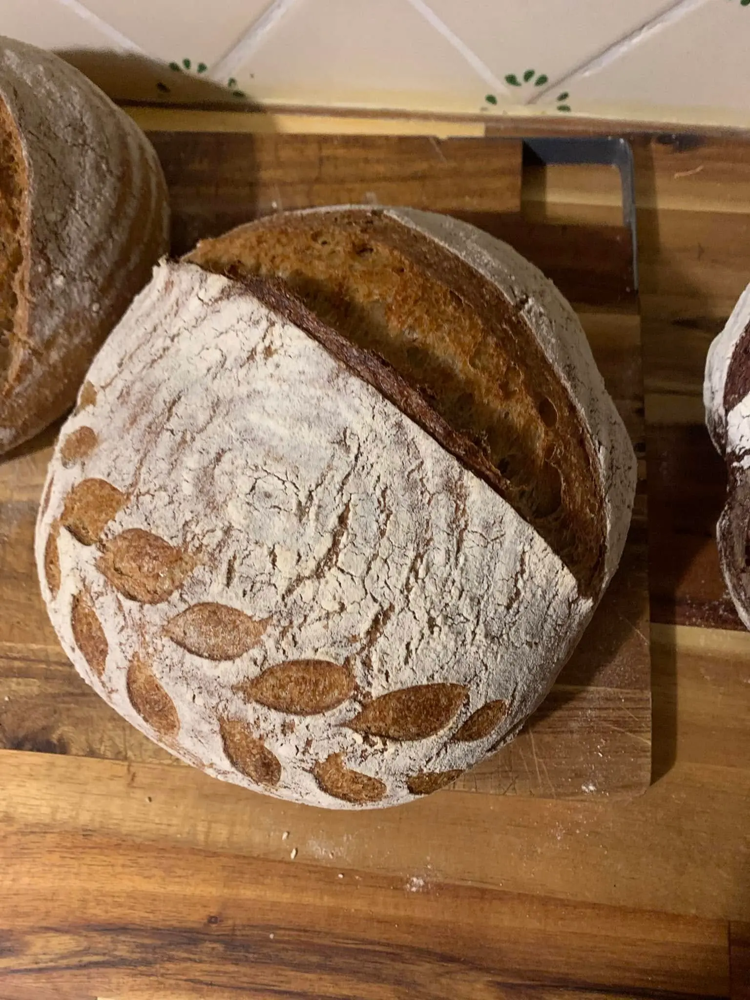
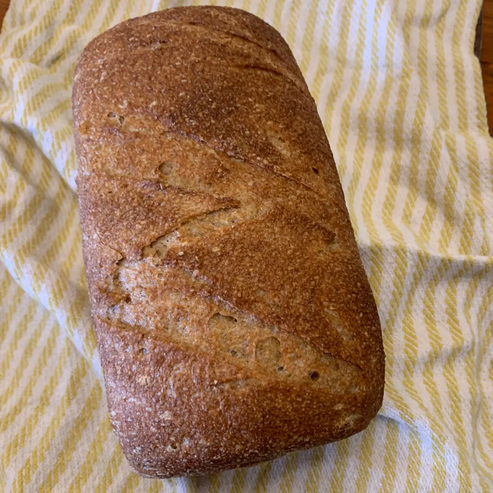
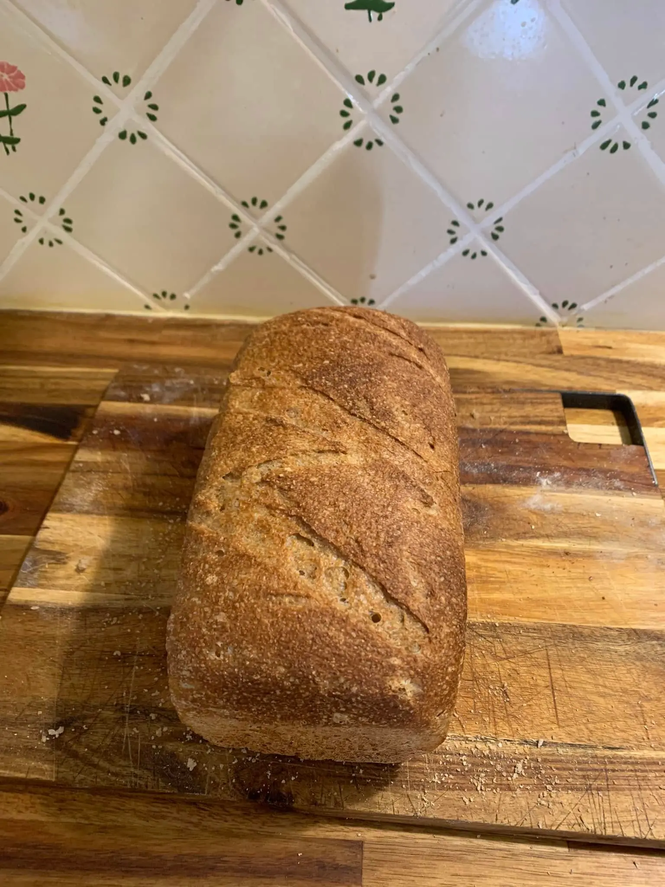

Home
Shop
About
Contact
Cart (
0
)
🌸 Easter & Divine Mercy Sunday 🌸
Fresh-milled, Organic Sourdough Bread
Man Does not Live on Bread Alone- Mt. 4:4
Shop Now
Chocolate Chunk Sourdough

Sourdough Boule
Sourdough Variety

Honey Wheat Sandwich Loaf
Sourdough Boule

Sourdough Boule

Honey Wheat Sandwich Loaf

Honey Wheat Sandwich Loaf
Babka special for Mardi Gras
 Sourdough Boule
Sourdough Boule
 Babka special for Mardi Gras
Babka special for Mardi Gras